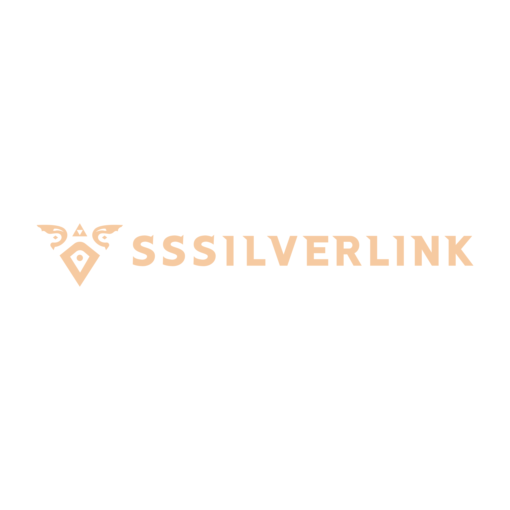

<title>SSSilverLink Partner Kit</title>
<link rel="icon" type="image/png" href="assets/favicon.png">
<link rel="preconnect" href="https://fonts.googleapis.com">
<link rel="preconnect" href="https://fonts.gstatic.com" crossorigin>
<link rel="stylesheet" href="https://fonts.googleapis.com/css2?family=Fraunces:opsz,wght,SOFT@9..144,300..900,0..100&family=Inter:wght@400;500;600;700&family=JetBrains+Mono:wght@400;500;700&display=swap">
<link rel="stylesheet" href="assets/style.css">

<header class="nav">
  <a href="#top" class="brand-lockup" aria-label="SSSilverLink home">
    
  </a>
  <nav class="nav-links" aria-label="Sections">
    <a href="#about">About</a>
    <a href="#preview">Preview</a>
    <a href="#numbers">Numbers</a>
    <a href="#pillars">Content</a>
    <a href="#partner">Partner</a>
    <a href="#contact">Contact</a>
  </nav>
</header>

<main id="top">

  <section class="hero">
    <div class="hero-copy">
      <div class="eyebrow"><span class="live-dot" aria-hidden="true"></span>Media Kit · 2026</div>
      <h1 class="headline">The Greatest <em>Adventure</em> on Twitch.</h1>
      <p class="tagline">Gracefully clumsy. Professional mediocrity. Your Twitch Hero.</p>
      <div class="hero-meta">
        <span><strong>1,100+</strong> streams and counting</span>
        <span><strong>2,500+</strong> followers</span>
        <span>Streaming since <strong>2018</strong></span>
      </div>
      <div class="cta-row">
        <a class="btn primary" href="https://twitch.tv/sssilverlink" target="_blank" rel="noopener">
          Watch Live
          <svg width="12" height="12" viewBox="0 0 12 12" fill="none" aria-hidden="true"><path d="M2 2 L10 2 L10 10" stroke="currentColor" stroke-width="1.5"/><path d="M10 2 L2 10" stroke="currentColor" stroke-width="1.5"/></svg>
        </a>
        <a class="btn" href="#partner">Partnership Menu</a>
        <a class="btn" href="#contact">Get in Touch</a>
      </div>
    </div>

    <div class="media-frame" aria-label="Live Twitch stream">
      <span class="media-corner tl" aria-hidden="true"></span>
      <span class="media-corner tr" aria-hidden="true"></span>
      <span class="media-corner bl" aria-hidden="true"></span>
      <span class="media-corner br" aria-hidden="true"></span>
      <span class="media-label">Live · twitch.tv/sssilverlink</span>
      <div class="media-aspect">
        <iframe
          src="https://player.twitch.tv/?channel=sssilverlink&parent=sssilverlink.com&parent=www.sssilverlink.com&parent=localhost&parent=127.0.0.1&muted=true&autoplay=false"
          allowfullscreen
          title="SSSilverLink live on Twitch"
          scrolling="no">
        </iframe>
        <div class="stream-fallback">
          <strong>Stream player unavailable in preview</strong>
          <br><br>
          <a class="btn primary" href="https://twitch.tv/sssilverlink" target="_blank" rel="noopener">Open on Twitch</a>
        </div>
      </div>
    </div>
  </section>

  <section class="block" id="about">
    <div class="rule"><span class="rule-label">01 · Who I Am</span></div>
    <div class="about-grid">
      <div class="about-copy">
        <h2 class="section-title">A chat-focused stream built on <em>consistency</em> and community.</h2>
        <p class="lead">
          I'm SilverLink (SSSilverLink). For seven years I've streamed Zelda, Mario, rogue-likes, metroidvanias, achievement hunts, and any playthrough that catches my eye. 1,100+ streams and still going strong. The bit is that I'm cheerfully bad at video games. The audience is here because the chat is warm, the schedule is dependable, and the room is one I actually talk to.
        </p>
        <p class="lead">
          What sponsors get isn't just a room; it's access to a loyal community. My chat participates. My Discord is active between streams. The people who show up show up on purpose, and they trust the reads I do because I only do reads for things I'd actually endorse.
        </p>
      </div>
      <div>
        
        <aside class="credo" aria-label="Brand credo">
          <div class="credo-line"><span>Voice</span><span>Self-deprecating, sincere, safe-for-work.</span></div>
          <div class="credo-line"><span>Social</span><span><a href="https://twitch.tv/sssilverlink">Twitch</a> · <a href="https://youtube.com/sssilverlink">YouTube</a> · <a href="https://discord.gg/Q3UGeGr">Discord Server</a> · <a href="https://www.tiktok.com/@sssilverlink">TikTok</a> · <a href="https://www.instagram.com/sssilverlink/">IG</a> · <a href="https://x.com/sssilverlink">X</a></span></div>
          <div class="credo-line"><span>Games</span><span>Nintendo and PC focussed, retro-friendly, achievement-driven.</span></div>
          <div class="credo-line"><span>Rules & Vibe</span><span>Be excellent to each other. Have fun.</span></div>
          <div class="credo-line"><span>Ask</span><span>Preference for Long-tail brand fit over one-off spikes.</span></div>
        </aside>
      </div>
    </div>
  </section>

  <section class="block" id="preview">
    <div class="rule"><span class="rule-label"> 02 · Preview</span></div>
    <h2 class="section-title">My channel, in <em>a few minutes</em>.</h2>
    <p class="lead">
      If the numbers below don't land, this should. Check out my Channel Trailer below.
    </p>
    <div class="trailer-wrap">
      <div class="media-frame">
        <span class="media-corner tl" aria-hidden="true"></span>
        <span class="media-corner tr" aria-hidden="true"></span>
        <span class="media-corner bl" aria-hidden="true"></span>
        <span class="media-corner br" aria-hidden="true"></span>
        <span class="media-label">Featured · YouTube</span>
        <div class="media-aspect">
          <iframe
            src="https://www.youtube-nocookie.com/embed/iMRcG4B_gFA?rel=0&modestbranding=1"
            title="SSSilverLink channel trailer"
            allow="accelerometer; clipboard-write; encrypted-media; gyroscope; picture-in-picture; web-share"
            allowfullscreen>
          </iframe>
        </div>
      </div>
    </div>
  </section>

  <section class="block" id="numbers">
    <div class="rule"><span class="rule-label"> 03 · By The Numbers</span></div>
    <h2 class="section-title">A room that shows up on <em>purpose</em>.</h2>
    <p class="lead">
      The strength here isn't scale, it's density. Mine is an audience that participates, sticks around between streams, and buys into the reads because they trust the judgement behind them.
    </p>
    <div class="stats-grid">
      <div class="stat stat-highlight">
        <div class="stat-value">2,500<em>+</em></div>
        <div class="stat-label">Twitch Followers</div>
        <div class="stat-note">Grown organically over seven years on air.</div>
      </div>
      <div class="stat">
        <div class="stat-value">1,100<em>+</em></div>
        <div class="stat-label">Lifetime Streams</div>
        <div class="stat-note">One of the most consistent small-mid channels on the platform.</div>
      </div>
      <div class="stat">
        <div class="stat-value">4,200<em>+</em></div>
        <div class="stat-label">Hours Streamed</div>
        <div class="stat-note">The channel has been live for the equivalent of nearly six months.</div>
      </div>
      <div class="stat stat-highlight">
        <div class="stat-value">72k<em>+</em></div>
        <div class="stat-label">Total Watch Hours</div>
        <div class="stat-note">All-time hours the audience has actively spent watching.</div>
      </div>
      <div class="stat stat-highlight">
        <div class="stat-value">27<em>%</em></div>
        <div class="stat-label">Chat Engagement Rate</div>
        <div class="stat-note">More than 1 in 4 viewers actively chats — roughly 5&times; the Twitch platform average.</div>
      </div>
      <div class="stat">
        <div class="stat-value">300<em>+</em></div>
        <div class="stat-label">YouTube Videos</div>
        <div class="stat-note">Long-tail archive of playthroughs, reacts, retro deep-dives, and tutorials.</div>
      </div>
      <div class="stat">
        <div class="stat-value">37.5k</div>
        <div class="stat-label">YouTube Lifetime Views</div>
        <div class="stat-note">Steady organic search traffic across the back catalog.</div>
      </div>
    </div>
    <p class="stats-footnote">
      ↳ Figures refreshed quarterly from Twitch Creator Dashboard, SullyGnome, and YouTube Studio.
    </p>
  </section>

  <section class="block" id="pillars">
    <div class="rule"><span class="rule-label"> 04 · Core Content</span></div>
    <h2 class="section-title">What I actually <em>play</em>.</h2>
    <div class="pillars">
      <div class="pillar">
        <svg class="pillar-icon" viewBox="0 0 32 32" fill="none" aria-hidden="true">
          <path d="M16 4 L28 12 L28 24 L16 30 L4 24 L4 12 Z" stroke="currentColor" stroke-width="1.5"/>
          <path d="M16 10 L22 22 L10 22 Z" stroke="currentColor" stroke-width="1.5" fill="currentColor" fill-opacity="0.2"/>
        </svg>
        <h3>Nintendo (Zelda &amp; Mario)</h3>
        <p>The home lane. Mainline Zelda, Mario Party nights, Nintendo Direct reactions, and every first-party title worth playing heroically on camera.</p>
      </div>
      <div class="pillar">
        <svg class="pillar-icon" viewBox="0 0 32 32" fill="none" aria-hidden="true">
          <rect x="5" y="9" width="22" height="16" rx="2" stroke="currentColor" stroke-width="1.5"/>
          <circle cx="11" cy="17" r="2" fill="currentColor"/>
          <circle cx="21" cy="17" r="2" fill="currentColor"/>
          <path d="M15 4 L17 8 M13 4 L15 8" stroke="currentColor" stroke-width="1.4"/>
        </svg>
        <h3>Retro &amp; Achievement Hunting</h3>
        <p>RetroAchievements arcs, backlog-completion runs, and the collector audience that grew alongside the channel.</p>
      </div>
      <div class="pillar">
        <svg class="pillar-icon" viewBox="0 0 32 32" fill="none" aria-hidden="true">
          <path d="M3 26 L12 10 L18 20 L23 12 L29 26 Z" stroke="currentColor" stroke-width="1.5" stroke-linejoin="round" fill="currentColor" fill-opacity="0.15"/>
          <path d="M23 12 L23 5" stroke="currentColor" stroke-width="1.5" stroke-linecap="round"/>
          <path d="M23 5 L27 6.5 L23 8 Z" stroke="currentColor" stroke-width="1.5" stroke-linejoin="round" fill="currentColor" fill-opacity="0.3"/>
        </svg>
        <h3>PC Indies &amp; Challenge Runs</h3>
        <p>Difficult PC games like Hades, Hollow Knight Completion Runs, and Celete are all part of the brand. Precision inputs are part of the challenge &mdash; not just nice to see.</p>
      </div>
      <div class="pillar">
        <svg class="pillar-icon" viewBox="0 0 32 32" fill="none" aria-hidden="true">
          <path d="M6 20 L14 20 L14 26 L6 26 Z" stroke="currentColor" stroke-width="1.5"/>
          <path d="M18 12 L26 12 L26 26 L18 26 Z" stroke="currentColor" stroke-width="1.5"/>
          <path d="M10 4 L22 4" stroke="currentColor" stroke-width="1.5"/>
          <path d="M16 4 L16 26" stroke="currentColor" stroke-width="1.5" stroke-dasharray="2 2"/>
        </svg>
        <h3>Events &amp; Charity</h3>
        <p>Subathons, SubTember, subgoal-driven arcs, and community events built around milestones the room chose together.</p>
      </div>
    </div>
  </section>

  <section class="block" id="audience">
    <div class="rule"><span class="rule-label"> 05 · Who's Watching</span></div>
    <h2 class="section-title">The audience is <em>close, adult, and loyal</em>.</h2>
    <div class="audience-cols">
      <div class="aud-col">
        <h3>Demographics</h3>
        <ul class="aud-list">
          <li><span class="aud-tick">◆</span><span><strong>Core Ages 25 - 44</strong> · the millennial Nintendo cohort with disposable income</span></li>
          <li><span class="aud-tick">◆</span><span><strong>North America dominant</strong> · US &amp; Canada primary, UK &amp; Australia secondary</span></li>
          <li><span class="aud-tick">◆</span><span><strong>English-language</strong> · streams run in a neutral-accent, SFW register</span></li>
          <li><span class="aud-tick">◆</span><span><strong>Return viewers</strong> · repeat rate weighted heavily over drive-by</span></li>
        </ul>
      </div>
      <div class="aud-col">
        <h3>Psychographics</h3>
        <ul class="aud-list">
          <li><span class="aud-tick">◆</span><span><strong>Nostalgia-driven purchasers</strong> · retro cartridges, reissues, indie throwbacks</span></li>
          <li><span class="aud-tick">◆</span><span><strong>Collector mindset</strong> · achievements, completion, backlog projects</span></li>
          <li><span class="aud-tick">◆</span><span><strong>Community-first</strong> · Discord participation stays active between streams</span></li>
          <li><span class="aud-tick">◆</span><span><strong>Hardware-invested</strong> · the PC-indie segment tracks frame times, monitors, and rig upgrades</span></li>
          <li><span class="aud-tick">◆</span><span><strong>Trust-driven</strong> · the room converts on recommendations, not on impressions</span></li>
        </ul>
      </div>
    </div>
  </section>

  <section class="block" id="partner">
    <div class="rule"><span class="rule-label"> 06 · Partnership Menu</span></div>
    <h2 class="section-title">Ways to <em>work together</em>.</h2>
    <p class="lead">
      Rates are on request and scale with duration, exclusivity, and cross-post scope. Long-term relationships get better numbers than one-off spots — brand fit matters more here than reach.
    </p>
    <div class="partner-table">
      <div class="partner-row header">
        <div>Placement</div>
        <div>What it is</div>
        <div>Starting from</div>
      </div>
      <div class="partner-row">
        <div class="partner-name">Verbal Read</div>
        <div class="partner-desc">Scripted or freeform brand mention delivered on-stream, twice per session, for a defined run.</div>
        <div class="partner-price">Request</div>
      </div>
      <div class="partner-row">
        <div class="partner-name">Panel + Banner</div>
        <div class="partner-desc">Persistent brand panel on the Twitch About tab plus an in-stream banner slot for a set number of weeks.</div>
        <div class="partner-price">Request</div>
      </div>
      <div class="partner-row">
        <div class="partner-name">Dedicated Playthrough</div>
        <div class="partner-desc">Full stream or multi-part series playing your title, with pinned links and community giveaway.</div>
        <div class="partner-price">Request</div>
      </div>
      <div class="partner-row">
        <div class="partner-name">YouTube Integration</div>
        <div class="partner-desc">Dedicated video or 60-second integrated segment inside an existing series, with SEO'd title and description.</div>
        <div class="partner-price">Request</div>
      </div>
      <div class="partner-row">
        <div class="partner-name">Social Cross-Post Bundle</div>
        <div class="partner-desc">Coordinated posts across TikTok, Instagram, and X, optionally paired with a Twitch stream drop.</div>
        <div class="partner-price">Request</div>
      </div>
      <div class="partner-row">
        <div class="partner-name">Discord Announcement</div>
        <div class="partner-desc">Vetted announcement to the community Discord — only for brands I'd personally endorse.</div>
        <div class="partner-price">Request</div>
      </div>
    </div>
  </section>

  <section class="block" id="contact">
    <div class="rule"><span class="rule-label"> 07 · Contact</span></div>
    <div class="contact-card">
      <div class="contact-left">
        <h2>Let's talk about a <em>real</em> partnership.</h2>
        <p>
          If your brand fits the room (PC Gaming, peripherals &amp; displays, retro-adjacent games, sim titles, indie Nintendo-likes, or community tools then I'd love to hear the pitch. I read every email; auto-blasts get ignored.
        </p>
        <a class="btn primary" href="mailto:silverlink@sssilverlink.com">Send a Pitch</a>
      </div>
      <div class="contact-right">
        <div class="contact-item">
          <span class="label">Business</span>
          <a href="mailto:silverlink@sssilverlink.com">silverlink@sssilverlink.com</a>
        </div>
        <div class="contact-item">
          <span class="label">Twitch</span>
          <a href="https://twitch.tv/sssilverlink" target="_blank" rel="noopener">twitch.tv/sssilverlink</a>
        </div>
        <div class="contact-item">
          <span class="label">YouTube</span>
          <a href="https://youtube.com/@SSSilverLink" target="_blank" rel="noopener">@SSSilverLink</a>
        </div>
        <div class="contact-item">
          <span class="label">Discord</span>
          <a href="https://discord.gg/Q3UGeGr" target="_blank" rel="noopener">discord.gg/Q3UGeGr — @SilverLink</a>
        </div>
        <div class="contact-item">
          <span class="label">Socials</span>
          <span class="value">@SSSilverLink · X · Instagram · TikTok</span>
        </div>
      </div>
    </div>
  </section>

</main>

<footer>
  <div class="footer-brand">
    
    <span>© SSSilverLink · Media Kit 2026</span>
  </div>
  <div class="socials">
    <a href="https://twitch.tv/sssilverlink" target="_blank" rel="noopener">Twitch</a>
    <a href="https://youtube.com/@SSSilverLink" target="_blank" rel="noopener">YouTube</a>
    <a href="https://discord.gg/Q3UGeGr" target="_blank" rel="noopener">Discord</a>
    <a href="https://x.com/sssilverlink" target="_blank" rel="noopener">X</a>
    <a href="https://instagram.com/sssilverlink" target="_blank" rel="noopener">Instagram</a>
    <a href="https://tiktok.com/@sssilverlink" target="_blank" rel="noopener">TikTok</a>
  </div>
</footer>

<script>
  (function () {
    var frame = document.querySelector('.hero .media-aspect iframe');
    var fb = document.querySelector('.hero .stream-fallback');
    if (!frame || !fb) return;
    var loaded = false;
    frame.addEventListener('load', function () { loaded = true; });
    setTimeout(function () {
      if (!loaded) {
        frame.style.display = 'none';
        fb.style.display = 'block';
      }
    }, 4000);
  })();
</script>
